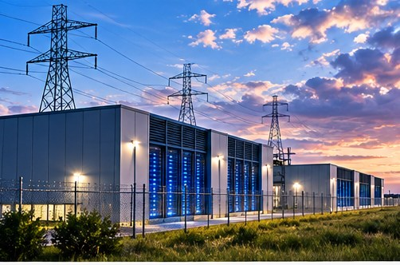

TEXAS NEWS STUDIO / NEWS
TEXAS / ENERGY · NOVEMBER 7, 2026
TEXAS DATA CENTER BOOM FACES QUESTIONS

TNS EDITORIAL NOTE: This is an original news brief and analysis of publicly discussed developments, not a claim of firsthand reporting. The image is a conceptual illustration, not documentary photography.
Texas leaders and residents are debating how rapid data-center growth could affect electricity, water and communities.
The promise and the price
Data centers can bring investment, construction work, and tax revenue. They also require electricity, cooling, land, and infrastructure. The right question is not whether technology investment is good or bad in the abstract. It is whether a particular project brings benefits that justify its local costs.
Questions communities should ask
How much power will the facility use? Who pays for new transmission or other infrastructure? What are the projected water needs? How many permanent jobs will remain after construction? Are promised tax benefits documented in an agreement? These are measurable questions, not ideological ones.
Why this is a Texas story
Texas has abundant land, an expanding technology sector, and a distinctive electric grid. That combination makes the state attractive for large computing facilities and makes transparency around energy planning especially important.
Tex's Take | TNS Commentary
My view: the most useful thing a news outlet can do is separate what is known from what is merely being predicted. Big headlines are easy. Following the documents, the numbers, and the consequences for ordinary people takes more work. And if every prediction of disaster came true, we'd all need a second calendar just to schedule the emergencies. We'll keep watching the facts, and we'll update the story when the evidence changes.